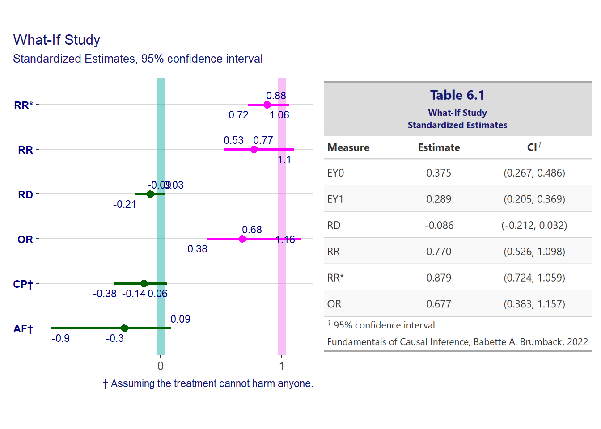
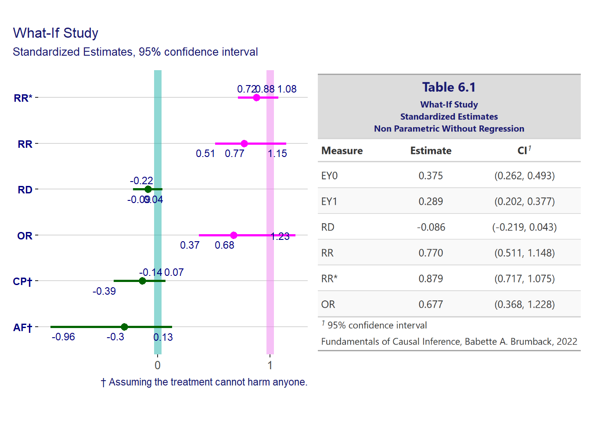
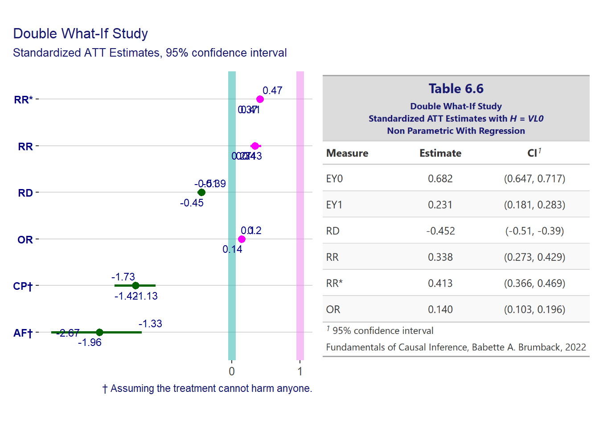
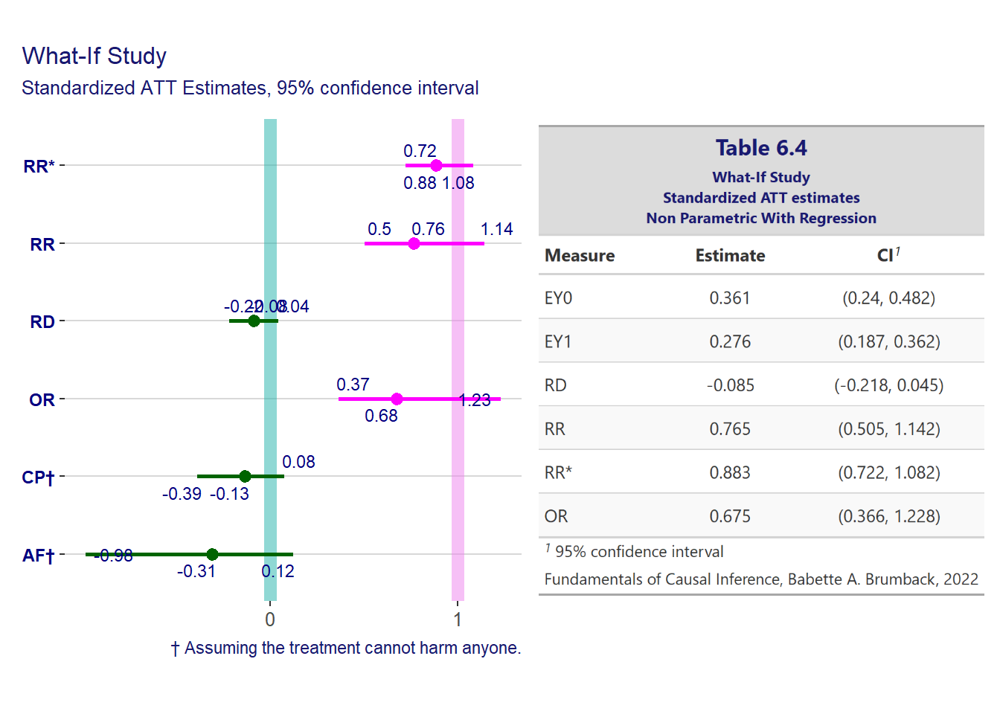

Chapter 6 Backdoor Method via Standardization
Important note on the notation used. When the author uses \(E(Y=t) \mid T=t, H=h)\) it means that we condition the data on \(H=h\) and we intervene on the \(T\) column and set it to \(T=t\).
For example for equation (6.2) we have
\[ \begin{align*} E(Y(t)) &= E_H(E(Y(t) \mid H)) \\ &= E_H(E(Y(t) \mid T = t, H)) \end{align*} \]
which indicates that \(T=t\) means that we set \(T=t\), i.e. it is not a condition that doesn’t involve a filter on the data. We know that because we have the \(E(Y(t))\) which tells us that.
But then we continue with proof (6.2) by adding the thrd line
\[ \begin{align*} E(Y(t)) &= E_H(E(Y(t) \mid H)) \\ &= E_H(E(Y(t) \mid T = t, H)) \\ &= E_H(E(Y \mid T = t, H)) \end{align*} \]
and, for the unwary beginner, \(E(Y \mid T = t, H)\) could mean that we are conditioning on \(T=t\), that is, we filter the \(T\) variable in the data. This is confusing.
To facilitate the reading and learning experience in this study project, whenever such confusion happens, the notation fro Pearl, using the \(do()\) operator will be used.
For example, the proof (6.2) becomes
\[ \begin{align*} E(Y(t)) &= E_H(E(Y(t) \mid H)) \\ &= E_H(E(Y(t) \mid T = t, H)) \\ &\text{and we use the do() operator to make it clear} \\ &\text{that T=t is not a condition, it is an intervention} \\ &\text{whereas H is a condition} \\ &= E_H(E(Y \mid do(T = t), H)) \end{align*} \]
6.1 Standardization via Outome Modeling
Standardization vis via outcome modelingis one way to estimate \(E(Y(t))\)
\[ \begin{align*} &\text{by double expectation theorem} \\ &E(Y(t)) = E_H E(Y(t) \mid H) \\ &\text{by independence of T given H, (6.1)} \\ &= E_HE(Y(t) \mid T=t, H) \\ &\text{by consistency assumption} \\ &= E_HE(Y \mid do(T=t), H) \end{align*} \]
and with a binary data set we can write
\[ \begin{align*} E_H E(Y \mid do(T=t), H) = E(Y \mid do(T=t), H = 0) P(H = 0) + E(Y \mid do(T=t), H = 1) P(H = 1) \end{align*} \]
and using the example on p. 100 with the mortality data we first load the data set
data("mortality_long", package = "fciR")
mortality <- mortality_longand we begin by calculating \(\hat{E}(Y \mid T=0, H=0)\)
mortality %>%
filter(`T` == 0, H == 0) %>%
summarize(EY = weighted.mean(Y, n))## EY
## 1 0.002253583and for all permutations of \(T\) and \(H\) we have
EYcondTH <- mortality %>%
group_by(`T`, H) %>%
summarize(EYcond = weighted.mean(Y, n))
EYcondTH## # A tibble: 4 x 3
## # Groups: T [2]
## T H EYcond
## <dbl> <dbl> <dbl>
## 1 0 0 0.00225
## 2 0 1 0.0565
## 3 1 0 0.00268
## 4 1 1 0.0446and then we multiply the conditional expectations by the probabilities of \(H\).
PH <- mortality %>%
group_by(H) %>%
summarize(prob = sum(p))
PH## # A tibble: 2 x 2
## H prob
## <dbl> <dbl>
## 1 0 0.897
## 2 1 0.103and the multiplication
EYH <- dplyr::inner_join(EYcondTH, PH, by = c("H")) %>%
mutate(EYH = EYcond * prob)
EYH## # A tibble: 4 x 5
## # Groups: T [2]
## T H EYcond prob EYH
## <dbl> <dbl> <dbl> <dbl> <dbl>
## 1 0 0 0.00225 0.897 0.00202
## 2 0 1 0.0565 0.103 0.00582
## 3 1 0 0.00268 0.897 0.00240
## 4 1 1 0.0446 0.103 0.00459and the final results are
EYout <- EYH %>%
group_by(`T`) %>%
summarize(EYout = sum(EYH))
EYout## # A tibble: 2 x 2
## T EYout
## <dbl> <dbl>
## 1 0 0.00784
## 2 1 0.00700Now, lets do it with raw data. For that we convert the mortality data to have 1 line per 10000 observations.
mort <- mortality %>%
select(H, `T`, Y, n) %>%
mutate(n = as.integer(n / 10000)) %>%
uncount(n)
str(mort)## 'data.frame': 176080 obs. of 3 variables:
## $ H: num 0 0 0 0 0 0 0 0 0 0 ...
## $ T: num 0 0 0 0 0 0 0 0 0 0 ...
## $ Y: num 0 0 0 0 0 0 0 0 0 0 ...and the function used to automate the process described above is as follows
est_out_np <- function(data, outcome, exposure, confound) {
# compute the frequencies
summ <- data %>%
count({{outcome}}, {{exposure}}, {{confound}}) %>%
mutate(freq = n / sum(n))
# the expected value of the outcome given the exposure and confounds
EYcond <- summ %>%
group_by({{exposure}}, {{confound}}) %>%
summarize(EYcond = weighted.mean(x = {{outcome}}, w = n))
# the probabilities of the confound
PH <- summ %>%
group_by({{confound}}) %>%
summarize(prob = sum(freq))
# multiply the conditional expectation by the confound probabilities
cnf <- enquo(confound)
EY <- dplyr::inner_join(EYcond, PH, by = quo_name(cnf)) %>%
mutate(EY = EYcond * prob) %>%
group_by({{exposure}}) %>%
summarize(EY = sum(EY)) %>%
arrange({{exposure}}) %>%
pull(EY) %>%
setNames(c("EY0", "EY1"))
}mort.out.est <- est_out_np(mort, outcome = Y, exposure = `T`, confound = H)
mort.out.est## EY0 EY1
## 0.007831933 0.006969437and we can see it gives the same results (the function is also found in
fciR::backdr_out_np)
message("This takes about 2 min. Load from file.")## This takes about 2 min. Load from file.# startTime <- Sys.time()
# mort.out.np <- fciR::boot_est(
# mort, fciR::backdr_out_np, R = 500, conf = 0.95, outcome.name = "Y",
# exposure.name = "T", confound.names = "H")
# endTime <- Sys.time()
# print(endTime - startTime)
a_file <- file.path(dir_data, "chap06_mort_out_np.rds")
# saveRDS(mort.out.np, file = a_file)
mort.out.np <- readRDS(file = a_file)| Mortality | ||
|---|---|---|
| Mortality Standardized Estimates via Outcome Modeling Non Parametric Without Regression |
||
| Measure | Estimate | CI1 |
| EY0 | 0.007832 | (0.007367, 0.008308) |
| EY1 | 0.006969 | (0.006137, 0.007798) |
| RD | -0.000862 | (-0.001804, 6.5e-05) |
| RR | 0.889874 | (0.781363, 1.014305) |
| RR* | 0.999131 | (0.998184, 1.000065) |
| OR | 0.889102 | (0.779946, 1.014369) |
| Fundamentals of Causal Inference, Babette A. Brumback, 2022 | ||
| 1 95% confidence interval | ||
and we now do it with the function fciR::backdr_out_npr. That function
works exactly as the function standr in the book.
message("This takes about 3 min. Load from file.")## This takes about 3 min. Load from file.# startTime <- Sys.time()
# mort.out.npr <- fciR::boot_est(
# mort, fciR::backdr_out_npr, R = 500, conf = 0.95, outcome.name = "Y",
# exposure.name = "T", confound.names = "H", interactions = list(c("T", "H")))
# endTime <- Sys.time()
# print(endTime - startTime)
a_file <- file.path(dir_data, "chap06_mort_out_npr.rds")
# saveRDS(mort.out.npr, file = a_file)
mort.out.npr <- readRDS(file = a_file)
and the results are the same again. In conclusion pretty much any of the
function. The function fciR::backdr_out_npr seems faster. The function
fciR::backdr_out_np is actually useful as a double check and it actually
uses a “pure” application of probabilities.
Examples
What-if? Study
data("whatifdat", package = "fciR")Non-parametric With Regression backdr_out_npr
whatif.out <- fciR::boot_est(
whatifdat, fciR::backdr_out_npr, R = 500, conf = 0.95, outcome.name = "Y",
exposure.name = "A", confound.names = "H", interactions = list(c("A", "H")))
# whatif.outand we compare with the author’s
comp <- data.frame(
name = c("EY0", "EY1", "RD", "RR"),
auth = c(0.375, 0.289, -0.086, 0.77),
est = whatif.out$est[whatif.out$name %in% c("EY0", "EY1", "RD", "RR")]
)
stopifnot(sum(abs(comp$auth - comp$est)) < 0.01)and the results are presented in table 6.1

where we observe a reduction of the viral load but the difference is not statistically significant.
Non-parametric Without Regression backdr_out_np
message("This takes about 15 sec.. Load from file.")## This takes about 15 sec.. Load from file.# startTime <- Sys.time()
# whatif.out.np <- fciR::boot_est(
# whatifdat, fciR::backdr_out_np, R = 500, conf = 0.95, outcome.name = "Y",
# exposure.name = "A", confound.names = "H")
# endTime <- Sys.time()
# print(endTime - startTime)
a_file <- file.path(dir_data, "chap06_whatif_out_np.rds")
# saveRDS(whatif.out.np, file = a_file)
whatif.out.np <- readRDS(file = a_file)
T0.he results are different when we don’t use linear regression!. Not a very large difference but a significant one.
Double What-if? Study
data("doublewhatifdat", package = "fciR")Non-parametric With Regression backdr_out_npr
doublewhatif.out <- fciR::boot_est(
doublewhatifdat, fciR::backdr_out_npr, R = 500, conf = 0.95, outcome.name = "VL1",
exposure.name = "A", confound.names = "AD0", interactions = list(c("A", "AD0")))
Non-parametric Without Regression backdr_out_np
message("This takes about 15 sec.. Load from file.")## This takes about 15 sec.. Load from file.# startTime <- Sys.time()
# doublewhatif.out.np <- fciR::boot_est(
# doublewhatifdat, fciR::backdr_out_np, R = 500, conf = 0.95, outcome.name = "VL1",
# exposure.name = "A", confound.names = "AD0")
# endTime <- Sys.time()
# print(endTime - startTime)
a_file <- file.path(dir_data, "chap06_doublewhatif_out_np.rds")
# saveRDS(doublewhatif.out.np, file = a_file)
doublewhatif.out.np <- readRDS(file = a_file)
and the results are the same
For comparisons, we repeat the standardization with \(H = VL_0\)
doublewhatif.out <- fciR::boot_est(
doublewhatifdat, fciR::backdr_out_npr, R = 500, conf = 0.95, outcome.name = "VL1",
exposure.name = "A", confound.names = "VL0", interactions = list(c("A", "VL0")))
6.1.1 Average Effect of Treatment on the Treated
The function bootstandatt described in section 6.1.1 is not necessary,
see the function bootstand in the previous section which can do it with the
addition of the argument att.
What-if? Study
whatif.att <- fciR::boot_est(
whatifdat, fciR::backdr_out_npr, R = 500, conf = 0.95, outcome.name = "Y",
exposure.name = "A", confound.names = "H", interactions = list(c("A", "H")),
att = TRUE)and we compare with the author’s
comp <- data.frame(
name = c("EY0", "EY1", "RD", "RR"),
auth = c(0.361, 0.276, -0.085, 0.765),
est = whatif.att$est[whatif.att$name %in% c("EY0", "EY1", "RD", "RR")]
)
stopifnot(sum(abs(comp$auth - comp$est)) < 0.01)and the results are presented in table 6.1
df <- whatif.att
tbl <- fciR::gt_measures(df,
title = "Table 6.4",
subtitle = paste("What-If Study", "Standardized ATT estimates",
"Non Parametric With Regression",
sep = "<br>"))
p <- fciR::ggp_measures(df,
title = NULL,
subtitle = NULL)
tbl <- fciR::gt2ggp(tbl)
p + tbl + plot_annotation(title = "What-If Study",
subtitle = "Standardized ATT Estimates, 95% confidence interval") &
theme(title = element_text(color = "midnightblue", size = rel(0.9)))
It can also be done using a non-parametric method without regression. That is following pure probabilities from the data.
message("This takes about 8 sec.. Load from file.")## This takes about 8 sec.. Load from file.# startTime <- Sys.time()
# whatif.out.att.np <- fciR::boot_est(
# whatifdat, fciR::backdr_out_np, R = 250, conf = 0.95, outcome.name = "Y",
# exposure.name = "A", confound.names = "H", att = TRUE)
# endTime <- Sys.time()
# print(endTime - startTime)
a_file <- file.path(dir_data, "chap06_whatif_out_att_np.rds")
# saveRDS(whatif.out.att.np, file = a_file)
whatif.out.att.np <- readRDS(file = a_file)
Double What-if? Study
doublewhatif.att <- fciR::boot_est(
doublewhatifdat, fciR::backdr_out_npr, R = 500, conf = 0.95, outcome.name = "VL1",
exposure.name = "A", confound.names = "AD0", interactions = list(c("A", "AD0")),
att = TRUE)
doublewhatif.att <- fciR::boot_est(
doublewhatifdat, fciR::backdr_out_npr, R = 500, conf = 0.95, outcome.name = "VL1",
exposure.name = "A", confound.names = "VL0", interactions = list(c("A", "VL0")),
att = TRUE)
6.1.2 Standardization with a Parametric Outcome Model
For a the parametric outcome model fciR::backdr_out() is used
What-if? Study
data("whatif2dat", package = "fciR")
whatif2.out <- fciR::boot_est(
whatif2dat, fciR::backdr_out, R = 100, conf = 0.95, outcome.name = "vl4",
exposure.name = "A", confound.names = "lvlcont0")and we compare with the author’s
comp <- data.frame(
name = c("EY0", "EY1", "RD", "RR"),
auth = c(0.360, 0.300, -0.061, 0.831),
est = whatif2.out$est[whatif2.out$name %in% c("EY0", "EY1", "RD", "RR")]
)
# comp
stopifnot(sum(abs(comp$auth - comp$est)) < 0.01)and the results are presented in table 6.1

General Social Survey
data("gss", package = "fciR")
gssrcc <- gss[, c("trump", "gthsedu", "magthsedu", "white", "female", "gt65")]
gssrcc <- gssrcc[complete.cases(gssrcc), ]message("This takes about 15 sec.. Load from file.")## This takes about 15 sec.. Load from file.# startTime <- Sys.time()
# gssrcc.out <- boot_est(data = gssrcc, func = backdr_out,
# R = 100, conf = 0.95,
# outcome.name = "trump", exposure.name = "gthsedu",
# confound.names = c("magthsedu", "white", "female", "gt65"))
# endTime <- Sys.time()
# print(endTime - startTime)
a_file <- file.path(dir_data, "chap06_gssrcc_out.rds")
# saveRDS(gssrcc.out, file = a_file)
gssrcc.out <- readRDS(file = a_file)
# gssrcc.outand we compare with the author’s
comp <- data.frame(
name = c("EY0", "EY1", "RD", "RR"),
auth = c(0.233, 0.271, 0.038, 1.164),
est = gssrcc.out$est[gssrcc.out$name %in% c("EY0", "EY1", "RD", "RR")]
)
stopifnot(sum(abs(comp$auth - comp$est)) < 0.01)and the results are presented in table 6.8

6.2 Standardization via Exposure Modeling
The exposure model is also known as the propensity score, denoted \(e(H)\), as it is a function of \(H\).
\[ \begin{align*} e(H) = (T \mid H) = expit(\alpha_0 + \alpha_1 H_1 + \ldots + \alpha_k H_k) \end{align*} \]
the proof of
\[ E(Y(1)) = E \left( \frac{TY}{e(H)} \right) \] is
\[ \begin{align*} &\text{by definition of expectation} \\ E \left( \frac{t \cdot y}{e(H)} \right) &= \sum_{y,t,h} \frac{TY}{e(H)} P(Y=y,T=t,H=h) \\ &\text{by multiplication rule} \\ &= \sum_{y,t,h} \frac{t \cdot y}{e(H)} P(Y=y \mid T=t,H=h) P(T=t \mid H=h) P(H=h) \\ &\text{because } T \text{ is binary, and by definition of } e(H) \text{ then } e(H) = P(T \mid H) \\ &= \sum_{y,t,h} \frac{t \cdot y}{e(H)} P(Y=y \mid T=t,H=h) e(H) P(H=h) \\ &\text{and when } T=0 \text{ the summand is zero, therefore we are left with } T=1 \\ &= \sum_{y,h} \frac{y}{e(H)} P(Y=y \mid T=1,H=h) e(H) P(H=h) \\ &\text{we cancel the } e(H) \text{ in numerator and denominator} \\ &= \sum_{y,h} y P(Y=y \mid T=1,H=h) P(H=h) \\ &\text{by definition of conditional expectation} \\ &= E_H (E(Y \mid T=1, H)) \\ &\text{and by (6.2) which implies (6.1)} \\ &= E(Y(1)) \end{align*} \]
Examples
Mortality Rates by Country
See section 1.2.1 in chapter 1 for details on data_mortability_exp.
data("mortality_long", package = "fciR")
mortdat <- as.data.frame(mortality_long)Compute the standardized estimates using exposure modeling with fciR::backdr_exp_np
mortdat.out <- fciR::backdr_exp_bb(mortdat, outcome.name = "Y", exposure.name = "T",
confound.names = "H", weights = "n")
mortdat.out[c("EY0", "EY1")]## $EY0
## [1] 0.007839904
##
## $EY1
## [1] 0.006995183# verify with the author's
stopifnot(abs(mortdat.out$EY0 - 0.0078399) < 1e-6,
abs(mortdat.out$EY1 - 0.0069952) < 1e-6)summ <- mort %>%
count(Y, `T`, H, name = "n") %>%
mutate(freq = n / sum(n))
summ## Y T H n freq
## 1 0 0 0 129433 0.7350806452
## 2 0 0 1 12549 0.0712687415
## 3 0 1 0 28154 0.1598932303
## 4 0 1 1 4611 0.0261869605
## 5 1 0 0 292 0.0016583371
## 6 1 0 1 751 0.0042651068
## 7 1 1 0 75 0.0004259428
## 8 1 1 1 215 0.0012210359stopifnot(sum(summ$freq) == 1)
eH <- summ %>%
group_by(`T`, H) %>%
summarize(n = sum(n)) %>%
group_by(H) %>%
mutate(prob = n / sum(n)) %>%
filter(`T` == 1) %>%
arrange(H) %>%
pull(prob)
# eH
stopifnot(all(eH > .Machine$double.eps^0.5))
eH0 <- eH[1]
eH1 <- eH[2]
is_att <- TRUE
e0 <- 1L
if (is_att) {
e0 <- summ %>%
filter(`T` == 1) %>%
summarize(sum(freq)) %>%
pull()
}
# create the eH variable
EY <- summ %>%
mutate(eH = (1 - H) * eH0 + H * eH1)
# compute the summand of the estimating equations
if (!is_att) {
EY <- EY %>%
mutate(s = (1 - `T`) * Y / (1 - eH) + `T` * Y / eH)
} else {
EY <- EY %>%
mutate(s = (1 - `T`) * Y * eH / (e0 * (1 - eH)) + `T` * Y / eH)
# E(Y|T=1) is estimated as before (see very last paragraph of section 6.2.1)
EYT <- summ %>%
filter(`T` == 1) %>%
group_by(Y) %>%
summarize(n = sum(n)) %>%
mutate(prob = n / sum(n)) %>%
summarize(EYT = sum(Y * prob))
}
# Estimate the value of the potential outcome
EY <- EY %>%
group_by(`T`) %>%
summarize(EY = sum(s * freq)) %>%
arrange(`T`) %>%
pull(EY)
if (is_att) EY[2] <- EYT
EY## [[1]]
## [1] 0.01016629
##
## [[2]]
## [1] 0.0087732576.2.1 Average Effect of Treatment on the Treated
It can be proven that
\[ E(Y(0) \mid T=1) = E \left( \frac{Y(1 - T) e(H)}{e_0(1 - e(H))} \right), \, e_0 = P(T=1) \\ \]
as follows
\[ \begin{align*} &\text{by the rule of double expectation} \\ E(Y(0) \mid T=1) &= E_{H \mid T=1} E(Y \mid T=0, H) \\ &\text{by definition of expectation} \\ &= E_{H \mid T=1} \left[ \sum_{y} y P(Y=y \mid T=0, H) \right] \\ &\text{by definition of conditional expectation} \\ &= \sum_h \left[ \sum_{y} y P(Y=y \mid T=0, H) \right] P(H=h \mid T=1) \\ &\text{by definition of conditional expectation we have that} \\ &P(H=h \mid T=1) = \frac{P(T=1 \mid H=h) P(H=h)}{P(T=1)} \\ &\text{therefore} \\ E(Y(0) \mid T=1) &= \sum_{y,h} y P(Y=y \mid T=0, H=h) \frac{P(T=1 \mid H=h) P(H=h)}{P(T=1)} \\ &\text{rearranging terms} \\ &= \sum_{y,h} y \frac{P(T=1 \mid H=h)}{P(T=1)} \left[ P(Y=y \mid T=0, H=h)P(H=h) \right] \\ &\text{and multiply by } 1 = \frac{P(T=0 \mid H=h)}{P(T=0 \mid H=h)} \\ &= \sum_{y,h} y \frac{P(T=1 \mid H=h)}{P(T=1)} \left[ \frac{P(Y=y \mid T=0, H=h)P(T=0 \mid H=h)P(H=h)}{P(T=0 \mid H=h)} \right] \\ &\text{rearranging the terms again} \\ &= \sum_{y,h} y \frac{P(T=1 \mid H=h)}{P(T=1)P(T=0 \mid H=h)} \left[ P(Y=y \mid T=0, H=h)P(T=0 \mid H=h)P(H=h) \right] \\ &\text{using the multiplication rule} \\ &= \sum_{y,h} y \frac{P(T=1 \mid H=h)}{P(T=1)P(T=0 \mid H=h)} P(Y=y, T=0, H=h) \\ &\text{ and since } e(h) = P(T=1 \mid H=h) \text{ and } e_0 = P(T=1) \\ &= \sum_{y,h} y \cdot \frac{e(h)}{e_0 (1 - e(h))} \cdot P(Y=y, T=0, H=h) \\ &\text{ and since } \sum_t (1-t) P(Y=y, T=t, H=h) = P(Y=y, T=0, H=h) \\ &= \sum_{y,h} y \cdot \frac{e(h)}{e_0 (1 - e(h))} \cdot \sum_t (1-t) P(Y=y, T=t, H=h) \\ &= \sum_{y,h, t} y \cdot (1-t) \cdot \frac{e(h)}{e_0 (1 - e(h))} \cdot P(Y=y, T=t, H=h) \\ &\text{and by definition of expectation} \\ &= E \left[ Y \cdot (1-T) \cdot \frac{e(H)}{e_0 (1 - e(H))} \right] \end{align*} \]
See previous section for calculation with mortality data for the function with
the flag is_att = TRUE
mortdat.out[["EY0T1"]]## [1] 0.01017592stopifnot(abs(mortdat.out$EY0T1 - 0.010176) < 1e-6)6.2.2 Standardization with a Parametric Exposure Model
The function fciR::backdr_exp() is used to standardized with a parametric exposure
model and the glm fit. It is the main function used in the chapter.
Alternatively the standardization could be done with geeglm from the geepack
package. For those focused primarily on the risk difference. See the
explanation on section 6.2.2 on why geeglm is not really good for the
risk ratio.
The function is called exp in the book. We rename it fciR::backdr_exp() to be
more informative and avoid mix up with the much-used base R function exp.
What-if? Study
First we do it using the glm fit
whatif2.exp <- boot_est(data = whatif2dat, func = backdr_exp,
R = 250, conf = 0.95,
outcome.name = "vl4", exposure.name = "A",
confound.names = c("lvlcont0"))
# whatif2.expand compare with the author’s
comp <- data.frame(
name = c("EY0", "EY1", "RD", "RR"),
auth = c(0.36, 0.30, -0.06, 0.834),
est = whatif2.exp$est[whatif2.exp$name %in% c("EY0", "EY1", "RD", "RR")])
stopifnot(sum(abs(comp$auth - comp$est)) < 0.01)and the results are presented in table 6.9

then we use the geeglm from the geepack package fit for risk difference
message("This takes about 6 sec.. Load from file.")## This takes about 6 sec.. Load from file.# startTime <- Sys.time()
# whatif2.expgee <- boot_est(data = whatif2dat, func = backdr_exp_gee,
# R = 250, conf = 0.95,
# outcome.name = "vl4", exposure.name = "A",
# confound.names = "lvlcont0")
# endTime <- Sys.time()
# print(endTime - startTime)
a_file <- file.path(dir_data, "chap06_whatif2gee.rds")
# saveRDS(whatif2.expgee, file = a_file)
whatif2.expgee <- readRDS(a_file)
# we don't use the risk ratio measures with this function
whatif2.expgee <- whatif2.expgee[!(whatif2.expgee$name %in% c("RR*", "OR")), ]
# whatif2.expgeeand the results are presented in table 6.9
| Table 6.9 geeglm | ||
|---|---|---|
| What-If Study Exposure-model Standardization using geeglm wtih H = lvlcont0 |
||
| Measure | Estimate | CI1 |
| EY0 | 0.360 | (0.236, 0.472) |
| EY1 | 0.300 | (0.219, 0.388) |
| RD | -0.060 | (-0.179, 0.079) |
| RR | 0.834 | (0.585, 1.252) |
| Fundamentals of Causal Inference, Babette A. Brumback, 2022 | ||
| 1 95% confidence interval | ||
6.3 Doubly Robust Standardization
The function backdr_dr() does a doubly robust standardization. It is not in the
text but is actually used for the exercise. It is very similar
to badstanddr.
The function badstanddr is replaced by backdr_dr_bad, used for doubly
robust standardization with a misspecified outcome model.
and using the What-if Study we obtain
whatif2.bad <- boot_est(data = whatif2dat, func = fciR::backdr_dr_bad,
R = 100, conf = 0.95,
outcome.name = "vl4", exposure.name = "A",
confound.names = "lvlcont0")
# whatif2.badand compare with the author’s
comp <- data.frame(
name = c("EY0", "EY1", "RD", "RR"),
auth = c(0.362, 0.300, -0.062, 0.830),
est = whatif2.bad$est[whatif2.bad$name %in% c("EY0", "EY1", "RD", "RR")])
stopifnot(sum(abs(comp$auth - comp$est)) < 0.01)and the results are presented in table 6.9

6.3.1 Doubly Robust Standardization Simulation
6.3.1.1 With simdr
The simulation of doubly robust standardization discussed at the end of
section 6.3 in p. 126 to 130 and found in simdr is analyzed in an appendix at
Doubly Robust Simulation.
The results obtained by Brumback are close enough to what we have below. Here is a tableau of her results
## Warning in data(fciR::fci_tbl_06_13): data set 'fciR::fci_tbl_06_13' not found| Table 6.13 and 6.14 | |||||||
|---|---|---|---|---|---|---|---|
| Sampling Distribution from Simulation Investigating Small-Sample Robustness True E(Y(0))=0.01, True E(Y(1))=0.02 |
|||||||
| estimator | description | ss=40 | ss=100 | ||||
| mean | sd | pval | mean | sd | pval | ||
| EYT0 | Unadjusted | 0.0076 | 0.0015 | 0.00 | 0.0079 | 0.0016 | 0.00 |
| EYT1 | Unadjusted | 0.0042 | 0.0012 | 0.00 | 0.0038 | 0.0012 | 0.00 |
| EY0exp | Linear Exposure | 0.0100 | 0.0021 | 0.92 | 0.0100 | 0.0020 | 0.61 |
| EY1exp | Linear Exposure | 0.0195 | 0.0127 | 0.19 | 0.0196 | 0.0562 | 0.81 |
| EY0exp2 | Logistic Exposure | 0.0101 | 0.0021 | 0.42 | 0.0100 | 0.0020 | 0.73 |
| EY1exp2 | Logistic Exposure | 0.0204 | 0.0064 | 0.07 | 0.0200 | 0.0068 | 0.96 |
| EY0out | Overspecified Outcome | 0.0100 | 0.0021 | 0.79 | 0.0100 | 0.0020 | 0.74 |
| EY1out | Overspecified Outcome | 0.0200 | 0.0066 | 0.84 | 0.0200 | 0.0069 | 0.74 |
| EY0dr | Doubly Robust | 0.0100 | 0.0021 | 0.82 | 0.0100 | 0.0020 | 0.72 |
| EY1dr | Doubly Robust | 0.0197 | 0.0106 | 0.37 | 0.0290 | 0.1891 | 0.14 |
| Fundamentals of Causal Inference, Babette A. Brumback, 2022 | |||||||
6.3.1.2 With mc_standdr
We perform the simulation using a Monte Carlo simulation called mc_standdr.
The script is in the appendix at mc_standdr.
We use a sample size of only 1000 as in the book.
nrep <- 1000So here the simulation with \(ss \in \{40, 100\}\)
message("This takes about 8 min. Load from file.")## This takes about 8 min. Load from file.# startTime <- Sys.time()
# mc.out <- fciR::mc_standdr(ss = c(40, 100), nrep = nrep)
# endTime <- Sys.time()
# print(endTime - startTime)
a_file <- file.path(dir_data, "chap06_mc_out.rds")
mc.out <- readRDS(file = a_file)
# saveRDS(mc.out, file = a_file)and we compute the p-values
mc.out <- mc.out %>%
mutate(`T` = ifelse(grepl(pattern = "0", estimator), 0, 1),
h0 = ifelse(`T` == 0, 0.01, 0.02),
sdp = sd / sqrt(n),
z = abs((mean - h0) / sdp),
pval = 2 * (1 - pnorm(z))) %>%
select(-sdp, -z)
# mc.outand show the results in a table
| Table 6.13 and 6.14 (by FL) | |||||||
|---|---|---|---|---|---|---|---|
| Sampling Distribution from Simulation Investigating Small-Sample Robustness True E(Y(0))=0.01, True E(Y(1))=0.02 |
|||||||
| estimator | description | ss=40 | ss=100 | ||||
| mean | sd | pval | mean | sd | pval | ||
| EYT0 | Unadjusted | 0.0076 | 0.0016 | 0.00 | 0.0079 | 0.0016 | 0.00 |
| EYT1 | Unadjusted | 0.0042 | 0.0011 | 0.00 | 0.0038 | 0.0011 | 0.00 |
| EY0exp | Linear Exposure | 0.0100 | 0.0021 | 0.65 | 0.0099 | 0.0021 | 0.03 |
| EY1exp | Linear Exposure | 0.0198 | 0.0072 | 0.45 | 0.0197 | 0.0173 | 0.63 |
| EY0exp2 | Logistic Exposure | 0.0101 | 0.0021 | 0.25 | 0.0099 | 0.0021 | 0.06 |
| EY1exp2 | Logistic Exposure | 0.0203 | 0.0063 | 0.15 | 0.0199 | 0.0066 | 0.51 |
| EY0out | Overspecified Outcome | 0.0100 | 0.0021 | 0.52 | 0.0099 | 0.0021 | 0.04 |
| EY1out | Overspecified Outcome | 0.0199 | 0.0065 | 0.60 | 0.0198 | 0.0068 | 0.44 |
| EY0dr | Doubly Robust | 0.0100 | 0.0021 | 0.55 | 0.0099 | 0.0021 | 0.04 |
| EY1dr | Doubly Robust | 0.0204 | 0.0145 | 0.36 | 0.0252 | 0.0982 | 0.09 |
| Fundamentals of Causal Inference, Babette A. Brumback, 2022 | |||||||